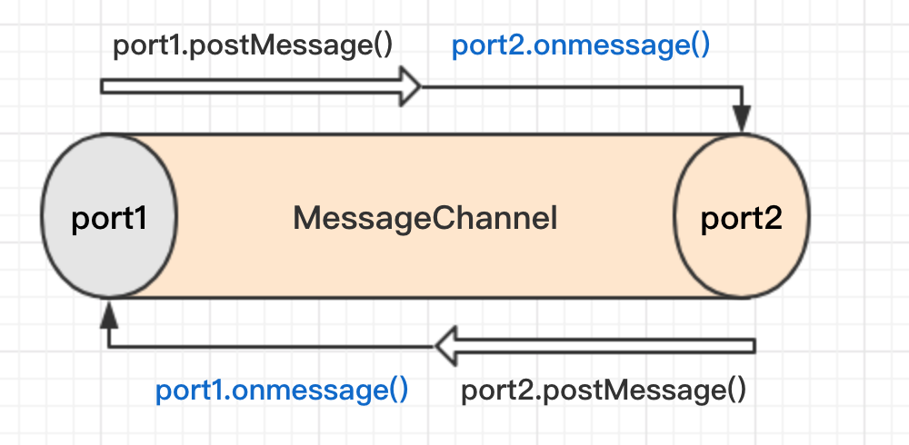
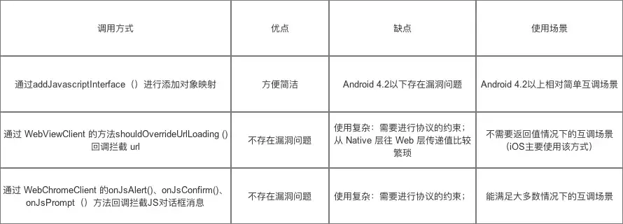

Native调用JS有2种方法：
1、通过evaluateJavascript接口
mWebView.evaluateJavascript（"javascript:callJS()", new ValueCallback<String>() {
@Override
public void onReceiveValue(String value) {
//此处为 js 返回的结果
}
});
2、通过loadUrl
mWebView.loadUrl("javascript:callJS()");
两种比较：

JS调用Native有以下几种方法：
- prompt/alert
- url拦截
- @JavascriptInterface注解
- local socket
- HTML message channels
1、prompt/alert/log等
var result = prompt("js://webview?arg1=111&arg2=222");
// WebChromeClient
public boolean onJsPrompt(WebView view, String url, String message,
String defaultValue, JsPromptResult result) {
//根据协议的参数，判断是否是所需要的url
// 一般根据scheme（协议格式） & authority（协议名）判断
//假定传入进来的 url = "js://webview?arg1=111&arg2=222"
Uri uri = Uri.parse(url);
if (uri.getScheme().equals("js")) {
if (uri.getAuthority().equals("webview")) {
result.confirm("success");
return true;
}
}
return false;
}
//console.log("js://webview?arg1=111&arg2=222")
@Override
public boolean onConsoleMessage(ConsoleMessage consoleMessage) {
String message = consoleMessage.message();
if(this.hijack(message)) {
return true;
}
return super.onConsoleMessage(consoleMessage);
}
@Override
public void onConsoleMessage(String message, int lineNumber, String sourceID) {
if(this.hijack(message)) {
return true;
}
super.onConsoleMessage(message, lineNumber, sourceID);
}
}
2、url拦截
function callback(result){}
document.location = "js://webview?arg1=111&arg2=222&cb=callback";
public boolean shouldOverrideUrlLoading(final WebView webView, String url) {
Uri uri = Uri.parse(url);
if (uri.getScheme().equals("js")) {
if (uri.getAuthority().equals("webview")) {
final String cb = uri.getQueryParameter("cb");
final String result = "success";
new Handler().post(new Runnable() {
@Override
public void run() {
webView.loadUrl(String.format("javascript:%1$s(%2$s)", cb, result));
}
});
}
return true;
}
return super.shouldOverrideUrlLoading(view, url);
}
3、JavascriptInterface注解
Android 4.4 后才可使用，有安全隐患一般都不会用
//定义一个js可调的native接口"android"
webview.addJavascriptInterface(new JavaScriptinterface(context, this),"android");
public class JavaScriptinterface {
public JavaScriptinterface(Context context) {
}
//带有此注释的标记可用于JavaScript代码
@JavascriptInterface
public void callAndroid(String url) {
Uri uri = Uri.parse(url);
if (uri.getScheme().equals("js")) {
if (uri.getAuthority().equals("webview")) {
final String cb = uri.getQueryParameter("cb");
final String result = "success";
webView.loadUrl(String.format("javascript:%1$s(%2$s)", cb, result));
}
}
}
}
function callNative() {
android.callAndroid('js://webview?arg1=111&arg2=222&cb=callback');
}
4、socket
Native启动一个ServerSocket，如端口号为8888，使用socket进行通信，这种比较麻烦。
$.get('http://127.0.0.1:8888/getGeoLocation?callback=cbname')
5、HTML message channels
仅支持android 6.0以上，用来代替JavascriptInterface机制。支持双向通信。
WebMessagePort[] channel = mWebView.createWebMessageChannel();
WebMessagePort port = channel[0];
// Create handler for channel[0] to receive messages
port.setWebMessageCallback(new WebMessagePort.WebMessageCallback() {
@Override
public void onMessage(WebMessagePort port, WebMessage message) {
//message from js
}
});
// Send channel[1] to webWindow，将触发window.onmessage方法
mWebView.postWebMessage(new WebMessage("", new WebMessagePort[]{channel[1]}), Uri.EMPTY);
//send message to js by port
port.postMessage(new WebMessage("hello from native"));
//定义window的onmessage回调，接收mWebView.postWebMessage发过来的事件
window.onmessage = function (event) {
port = event.ports[0];//记录下传过来的port，也即是上面的channel[1]
//给port定义onmessage回调，只有就可以通过port进行通信了
port.onmessage = function (e) {
parse(e.data);
}
}
说一下MessagePort和MessageChannel是啥？
MessageChannel 构造函数会创建一对相互关联的 MessagePort 对象(port1 和 port2)，怎么理解 MessagePort 对象呢？可以把一个 MessagePort 对象当成消息传递的端口，而MessageChannel连接着这两个端口，我们可以通过这两个端口来进行消息的传递，port1 和 port2 可以相互传递处理消息，想象一下现实生活中的两个人通过手机打电话，一个 MessagePort 对象就是一个手机，MessageChannel就是电信运营商。 
在web环境下，JavaScript 跨域的问题，一直是一个颇为棘手的问题，HTML5 提供了网页文档之间互相接收与发送信息的功能，使用postMessage 和 onmessage主要就用来解决跨文档通信的问题的（称之为cross-document messaging）。当然上面所说的MessageChannel也是一种通信方式，称之为channel messaging。他们是HTML5通信接口套件的重要组成部分。
在Native侧，通过WebView#postWebMessage，可以将其中一个port(如port2)封装进WebMessage对象中，并传入JS环境，JS环境拿到port以后，就可以和另外剩余的那个port(如port1)进行通信了。注意到这个过程使用到了上面所述的两种通信方式：通过postMessage传递port，然后通过port进行后续的通信。
几种方法的比较

第三方库
基本上交互的基本方式就是以上几种，不过有人将通信机制进行了封装，形成一套完善的 WebviewJSBridge 方案，提供了客户端调前端，前端调用客户端的系统解决方案。 * lzyzsd/JsBridge项目，我们从代码中可以看到，其实它在底层是使用了 URL 劫持的方法与 JS 进行交互。 * 微店也开源了一个小程序运行框架Hera，使用的是addJavascriptInterface方式进行的交互。 * web app项目Cordova-Android，则通过addJavascriptInterface 和JS Prompt这两种方式来实现JS对于Native API的调用。 * DSBridge跨平台解决方案，唯一一个支持同步调用的javascript bridge